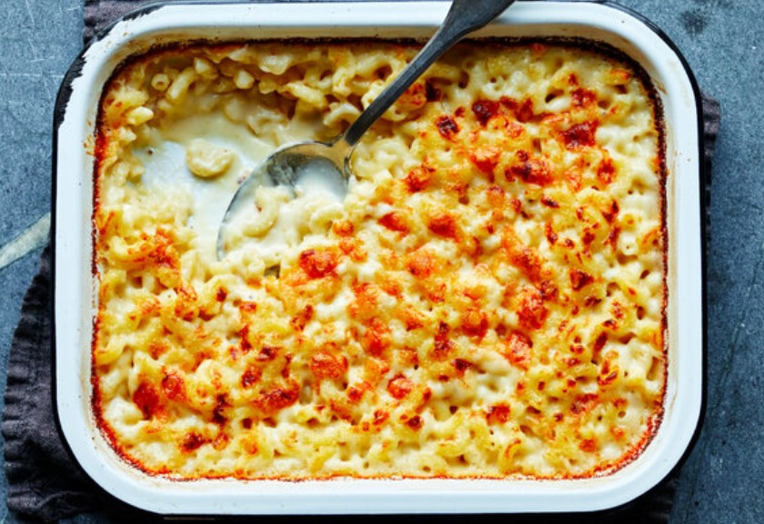
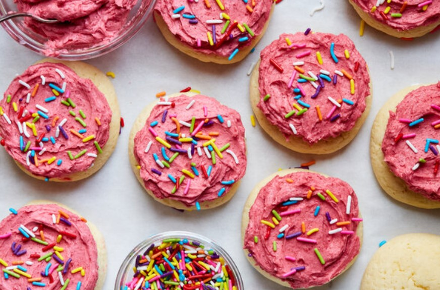

Thinly cut strips of steak wind their way around crunchy and flavourful vegetables like bell pepper and zucchini.
These rolls are topped off with a scrumptious rosemary balsamic glaze.
If that ain't fancy, we don't know what is.
Thinly cut strips of steak wind their way around crunchy and flavourful vegetables like bell pepper and zucchini.
These rolls are topped off with a scrumptious rosemary balsamic glaze.
If that ain't fancy, we don't know what is. There are two schools of thought about macaroni and cheese: Some like it crusty and extra-cheesy, while others prefer it smooth and creamy. But most people are delighted by any homemade macaroni and cheese. It is light years ahead of the boxed versions. This creamy version has one powerful advantage for the cook: There is need to preboil the pasta. It cooks in the oven, absorbing the liquid from the dairy products.
Soft Sugar Cookies With Raspberry Frosting

In 1994,Lofthouse Cookies hit American grocery store shelves like a frosted meteorite.
If you grew up in the suburbs, then you may have had one: soft, cakey, melt-in-your-mouth.
Unlike their clamshell couterparts, which contain margarine, these homemade verions are made with butter and cream cheese,
both of which add wonderful flavour that margine alone does not.
Thinly cut strips of steak wind their way around crunchy and flavourful vegetables like bell pepper and zucchini.
These rolls are topped off with a scrumptious rosemary balsamic glaze.
If that ain't fancy, we don't know what is.
 What happens when you mix breakfast and dessert together?
You get the most sought-after meal of all:bressert!
And if bressert had a spokeperson, it would be this over-the-top pancake.
Chocolate, marshmallow, graham cracker, fudge sauce and cream all come together.
What happens when you mix breakfast and dessert together?
You get the most sought-after meal of all:bressert!
And if bressert had a spokeperson, it would be this over-the-top pancake.
Chocolate, marshmallow, graham cracker, fudge sauce and cream all come together.